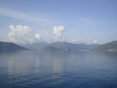
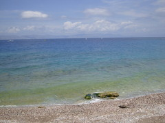
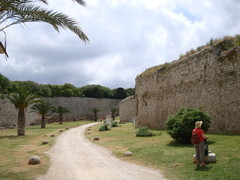
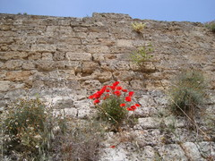
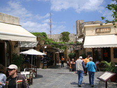
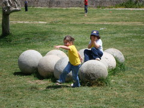

ホテルの人のアドバイスに従って朝一で港へ急いだ。
幸いチケットは空きがあり、無事トルコを出国、ギリシャのロードス島へ渡った。
天気も良く、エーゲ海がすばらしい。
| マルマリスの湾 | ロードス島のエーゲ海 |
|  |
 |
島に上陸するとホテルの客引きが大勢寄ってくる、と聞いていたのだが
まったく寄ってこない。オフシーズンだからだろうか。
とりあえずホテルを探そうとツーリストインフォメーションに行ってみたら、
土日は休みだった。そもそも今日が土曜日だったことを知らなかった。
しかたがないのでガイドブックにあった海近くのきれいなホテルを尋ね、即決。
まだオフシーズンなので安くてすいている。
そしてロードスの城砦へ。
今回も歴史の予習は、コンスタンティノープルの陥落と同じ塩野七生の、ロードス島攻防記。
コンスタンティノープルを制覇したオスマン・トルコが、後にキリスト教側の最前線
ロードス島でヨハネ騎士団と激戦を交えた。
今回の旅程の一部は、この流れを意識している。
昨日経由したマルマリスはこの戦争でトルコ側の補給拠点だったらしい。
| 城壁間。かつては死体で溢れる | 城壁に咲く花 |
|  |
 |
旧市街の中心部は観光客向けの店が並び、陽気なムードが溢れている。
強い日差しの下で、縦横無尽に歩き回った。
かつてトルコ軍から間断なく撃ち込まれたという大砲の砲弾が、あちこちにごろごろ残っており、
今ではなごやかなオブジェのようになっていた。
| どこも同じようなメニューのレストラン | 残っている砲弾 |
|  |
 |
先日の反省を踏まえ、ホテルで聞いた旅行会社でアテネに向かう船を予約した。
夜は少し贅沢な食事と酒で満足。でもそういう食事は一人だといまいち。
|